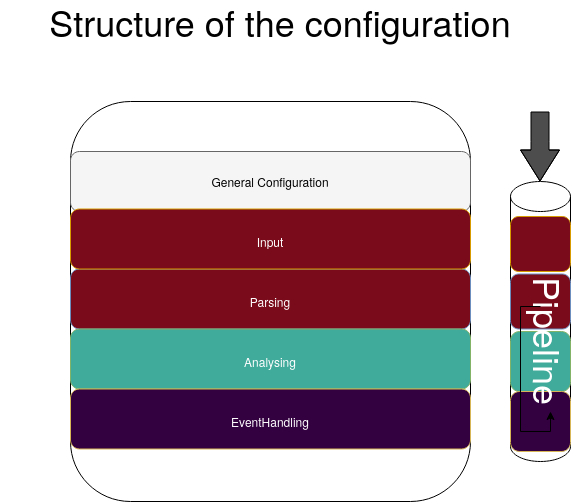
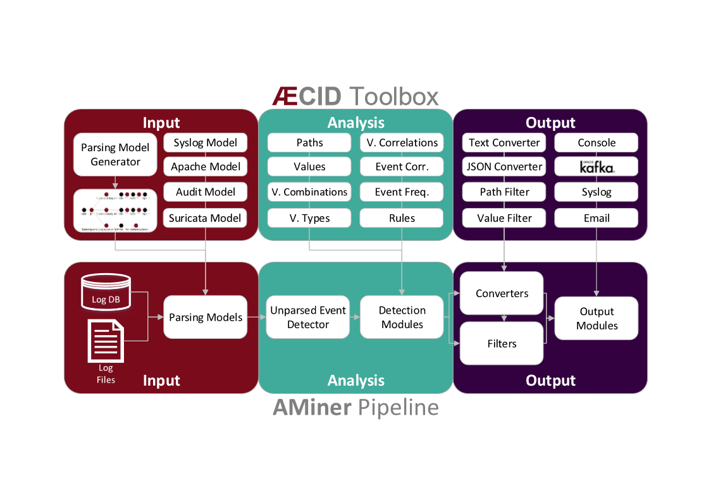

Overview¶
The logdata-anomaly-miner can be configured in two different formats: yaml and python. The preferred format is yaml and the default configuration file for it is /etc/aminer/config.yaml. The python format can be configured in /etc/aminer/config..py and offers more different ways to configure the logdata-anomaly-miner. However, this is only recommended for experts, as no errors are caught in the python configuration, which can make debugging very difficult. For both formats there are template configurations in /etc/aminer/template_config.yaml and /etc/aminer/template_config.py.
The basic structure of the logdata-anomaly-miner is illustrated in the folloging diagram:
Analysis Pipeline¶
The core component of the logdata-anomaly-miner is the “analysis pipeline”. It consists of the parts INPUT, ANALYSIS and OUTPUT
Configuration Reference¶
General Configuration¶
Supported settings:
LearnMode¶
Type: boolean (True,False)
Default: False
This options turns the LearnMode on globally.
Warning
This option can be overruled by the learn_mode that is configurable per analysis component.
LearnMode: True
AminerUser¶
Default: aminer
This option defines the system-user that owns the aminer-process.
AminerUser: 'aminer'
AminerGroup¶
Default: aminer
This option defines the system-group that owns the aminer-process.
AminerGroup: 'aminer'
RemoteControlSocket¶
This option controls where the unix-domain-socket for the RemoteControl should be created. The socket will not be created if this option was not set.
RemoteControlSocket: '/var/lib/aminer/remcontrol.sock'
SuppressNewMatchPathDetector¶
Default: False
Type: boolean (True,False)
Disable the NewMatchPathDetector which detects new paths for logtypes.
SuppressNewMatchPathDetector: 'False'
LogResourceList¶
Required: True
Resource-Types:
file://,unix://
Define the list of log resources to read from: the resources named here do not need to exist when aminer is started. This will just result in a warning. However if they exist, they have to be readable by the aminer process!
Supported types are:
file://[path]: Read data from file, reopen it after rollover
unix://[path]: Open the path as UNIX local socket for reading
LogResourceList:
- 'file:///var/log/apache2/access.log'
- 'file:///home/ubuntu/data/mail.cup.com-train/daemon.log'
- 'file:///home/ubuntu/data/mail.cup.com-train/auth.log'
- 'file:///home/ubuntu/data/mail.cup.com-train/suricata/eve.json'
- 'file:///home/ubuntu/data/mail.cup.com-train/suricata/fast.log'
Core.PersistenceDir¶
Default: /var/lib/aminer
Read and store information to be used between multiple invocations of aminer in this directory. The directory must only be accessible to the ‘AminerUser’ but not group/world readable. On violation, aminer will refuse to start.
Core.PersistenceDir: '/var/lib/aminer'
Core.PersistencePeriod¶
Type: Number of seconds
Default: 600
This options controls the logdata-anomaly-miner should write it’s persistency to disk.
Core.PersistencePeriod: 600
Core.LogDir¶
Default: /var/lib/aminer/log
Directory for logfiles. This directory must be writeable to the ‘AminerUser’.
Core.LogDir: '/var/lib/aminer/log'
MailAlerting.TargetAddress¶
Default: disabled
Define a target e-mail address to send alerts to. When undefined no e-mail notification hooks are added.
MailAlerting.TargetAddress: 'root@localhost'
MailAlerting.FromAddress¶
Sender address of e-mail alerts. When undefined, “sendmail” implementation on host will decide, which sender address should be used.
MailAlerting.FromAddress: 'root@localhost'
MailAlerting.SubjectPrefix¶
Default: “aminer Alerts”
Define, which text should be prepended to the standard aminer subject.
MailAlerting.SubjectPrefix: 'aminer Alerts:'
MailAlerting.AlertGraceTime¶
Type: Number of seconds
Default: 0 (any event can immediately trigger alerting)
Define a grace time after startup before aminer will react to an event and send the first alert e-mail.
MailAlerting.AlertGraceTime: 0
MailAlerting.EventCollectTime¶
Type: Number of seconds
Default: 10
Define how many seconds to wait after a first event triggered the alerting procedure before really sending out the e-mail. In that timespan, events are collected and will be sent all using a single e-mail.
MailAlerting.EventCollectTime: 10
MailAlerting.MinAlertGap¶
Type: Number of seconds
Default: 600
Define the minimum time between two alert e-mails in seconds to avoid spamming. All events during this timespan are collected and sent out with the next report.
MailAlerting.MinAlertGap: 600
MailAlerting.MaxAlertGap¶
Type: Number of seconds
Default: 600
Define the maximum time between two alert e-mails in seconds. When undefined this defaults to “MailAlerting.MinAlertGap”. Otherwise this will activate an exponential backoff to reduce messages during permanent error states by increasing the alert gap by 50% when more alert-worthy events were recorded while the previous gap time was not yet elapsed.
MailAlerting.MaxAlertGap: 600
MailAlerting.MaxEventsPerMessage¶
Type: Number of events
Default: 1000
Define how many events should be included in one alert mail at most.
MailAlerting.MaxEventsPerMessage: 1000
Log.StatisticsPeriod¶
Type: Number of seconds
Default: 3600
Defines how often to write into stat-logfiles.
Log.StatisticsPeriod: 3600
Log.StatisticsLevel¶
Type: Number of loglevel
Default: 1
Defines the loglevel for the stat logs.
Log.StatisticsLevel: 2
Log.DebugLevel¶
Type: Number of loglevel
Default: 1
Defines the loglevel of the aminer debug-logfile.
Log.DebugLevel: 2
Log.RemoteControlLogFile¶
Default: ‘/var/lib/aminer/log/aminerRemoteLog.txt’
Type: string (path to the logfile)
Defines the path of the logfile for the RemoteControl.
Log.RemoteControlLogFile: '/var/log/aminerremotecontrol.log'
Log.StatisticsFile¶
Default: ‘/var/lib/aminer/log/statistics.log’
Type: string (path to the logfile)
Defines the path of the stats-file.
Log.StatisticsFile: '/var/log/aminer-stats.log'
Log.DebugFile¶
Default: ‘/var/lib/aminer/log/aminer.log’
Type: string (path to the logfile)
Defines the path of the debug-log-file.
Log.DebugFile: '/var/log/aminer.log'
Input¶
timestamp_paths¶
Type: string or list of strings
Parser paths to DateTimeModelElements to set timestamp of log events.
timestamp_paths: '/model/time'
timestamp_paths:
- '/parser/model/time'
- '/parser/model/type/execve/time'
- '/parser/model/type/proctitle/time'
- '/parser/model/type/syscall/time'
- '/parser/model/type/path/time'
multi_source¶
Type: boolean (True,False)
Default: False
Flag to enable chronologicly correct parsing from multiple input-logfiles.
multi_source: True
verbose¶
Type: boolean (True,False)
Default: False
Flag to enable that detailed information is shown for unparsed loglines.
verbose: True
eol_sep¶
Default: ‘n’
End of Line seperator for events.
Note
Enables parsing of multiline logs.
eol_sep: '\r\n'
json_format¶
Type: boolean (True,False)
Default: False
Enables parsing of logs in json-format.
json_format: True
Parsing¶
There are some predefined standard-model-elements like IpAddressDataModelElement, DateTimeModelElement, FixedDataModelElement and so on. They are located in the python-source-tree of logdata-anomaly-miner. A comprehensive list of all possible standard-model-elements can be found below. Using these standard-model-elements it is possible to create custom parser models. Currently there are to methods of doing it:
Using a python-script that is located in /etc/aminer/conf-enabled:
""" /etc/aminer/conf-enabled/ApacheAccessParsingModel.py"""
from aminer.parsing.DateTimeModelElement import DateTimeModelElement
from aminer.parsing.DecimalIntegerValueModelElement import DecimalIntegerValueModelElement
from aminer.parsing.DelimitedDataModelElement import DelimitedDataModelElement
from aminer.parsing.FirstMatchModelElement import FirstMatchModelElement
from aminer.parsing.FixedDataModelElement import FixedDataModelElement
from aminer.parsing.FixedWordlistDataModelElement import FixedWordlistDataModelElement
from aminer.parsing.IpAddressDataModelElement import IpAddressDataModelElement
from aminer.parsing.OptionalMatchModelElement import OptionalMatchModelElement
from aminer.parsing.SequenceModelElement import SequenceModelElement
from aminer.parsing.VariableByteDataModelElement import VariableByteDataModelElement
def get_model():
"""Return a model to parse Apache Access logs from the AIT-LDS."""
alphabet = b'!"#$%&\'()*+,-./0123456789:;<>?@ABCDEFGHIJKLMNOPQRSTUVWXYZ\\^_`abcdefghijklmnopqrstuvwxyz{|}~=[]'
model = SequenceModelElement('model', [
FirstMatchModelElement('client_ip', [
IpAddressDataModelElement('client_ip'),
FixedDataModelElement('localhost', b'::1')
]),
FixedDataModelElement('sp1', b' '),
VariableByteDataModelElement('client_id', alphabet),
FixedDataModelElement('sp2', b' '),
VariableByteDataModelElement('user_id', alphabet),
FixedDataModelElement('sp3', b' ['),
DateTimeModelElement('time', b'%d/%b/%Y:%H:%M:%S'),
FixedDataModelElement('sp4', b' +'),
DecimalIntegerValueModelElement('tz'),
FixedDataModelElement('sp5', b'] "'),
FirstMatchModelElement('fm', [
FixedDataModelElement('dash', b'-'),
SequenceModelElement('request', [
FixedWordlistDataModelElement('method', [
b'GET', b'POST', b'PUT', b'HEAD', b'DELETE', b'CONNECT', b'OPTIONS', b'TRACE', b'PATCH']),
FixedDataModelElement('sp6', b' '),
DelimitedDataModelElement('request', b' ', b'\\'),
FixedDataModelElement('sp7', b' '),
DelimitedDataModelElement('version', b'"'),
])
]),
FixedDataModelElement('sp8', b'" '),
DecimalIntegerValueModelElement('status_code'),
FixedDataModelElement('sp9', b' '),
DecimalIntegerValueModelElement('content_size'),
OptionalMatchModelElement(
'combined', SequenceModelElement('combined', [
FixedDataModelElement('sp10', b' "'),
DelimitedDataModelElement('referer', b'"', b'\\'),
FixedDataModelElement('sp11', b'" "'),
DelimitedDataModelElement('user_agent', b'"', b'\\'),
FixedDataModelElement('sp12', b'"'),
])),
])
return model
This parser can be used as “type” in /etc/aminer/config.yml:
Parser:
- id: 'apacheModel'
type: ApacheAccessModel
name: 'apache'
Warning
Please do not create files with the ending “ModelElement” in /etc/aminer/conf-enabled!
Configuring the parser-model inline in /etc/aminer/config.yml
Parser:
- id: host_name_model
type: VariableByteDataModelElement
name: 'host'
args: '-.01234567890abcdefghijklmnopqrstuvwxyz:'
- id: identity_model
type: VariableByteDataModelElement
name: 'ident'
args: '-.01234567890abcdefghijklmnopqrstuvwxyz:'
- id: user_name_model
type: VariableByteDataModelElement
name: 'user'
args: '0123456789abcdefghijklmnopqrstuvwxyz.-'
- id: new_time_model
type: DateTimeModelElement
name: 'time'
args: '[%d/%b/%Y:%H:%M:%S +0000]'
- id: sq3
type: FixedDataModelElement
name: 'sq3'
args: ' "'
- id: request_method_model
type: FixedWordlistDataModelElement
name: 'method'
args:
- 'GET'
- 'POST'
- 'PUT'
- 'HEAD'
- 'DELETE'
- 'CONNECT'
- 'OPTIONS'
- 'TRACE'
- 'PATCH'
- id: request_model
type: VariableByteDataModelElement
name: 'request'
args: '0123456789abcdefghijklmnopqrstuvwxyzABCDEFGHIJKLMNOPQRSTUVWXYZ.-/()[]{}!$%&=<?*+'
- id: http1
type: FixedDataModelElement
name: 'http1'
args: ' HTTP/'
- id: version_model
type: VariableByteDataModelElement
name: 'version'
args: '0123456789.'
- id: sq4
type: FixedDataModelElement
name: 'sq4'
args: '" '
- id: status_code_model
type: DecimalIntegerValueModelElement
name: 'status'
- id: size_model
type: DecimalIntegerValueModelElement
name: 'size'
- id: sq5
type: FixedDataModelElement
name: 'sq5'
args: ' "-" "'
- id: user_agent_model
type: VariableByteDataModelElement
name: 'useragent'
args: '0123456789abcdefghijklmnopqrstuvwxyzABCDEFGHIJKLMNOPQRSTUVWXYZ.-/()[]{}!$%&=<?*+;:_ '
- id: sq6
type: FixedDataModelElement
name: 'sq6'
args: '"'
- id: 'startModel'
start: True
type: SequenceModelElement
name: 'accesslog'
args:
- host_name_model
- WHITESPACE
- identity_model
- WHITESPACE
- user_name_model
- WHITESPACE
- new_time_model
- sq3
- request_method_model
- WHITESPACE
- request_model
- http1
- version_model
- sq4
- status_code_model
- WHITESPACE
- size_model
- sq5
- user_agent_model
- sq6
The parsing section in /etc/aminer/config.yml starts with the statement “Parser:” followed by a list of parser-models. Every parser-model in this list must have a unique id and a type. The unique id can be used to cascade models by adding the id of an parser-model as arguments(args). One parser of this list must contain start: True that indicates the first parser-model:
Parser:
- id: 'apacheModel'
type: ApacheAccessModel
name: 'apache'
- id: 'startModel'
start: True
type: SequenceModelElement
name: 'model'
args: apacheModel
id: must be a unique string
type: must be an existing ModelElement
start: a boolean value that indicates the starting model. Only one parser-model must have enabled this option!
args*: a string or a list of strings containing the arguments of the specific parser.
Note
args can contain the constant WHITESPACE which is a preset for spaces
AnyByteDataModelElement¶
name: string with the element-id
This parsing-element matches any byte but at least one. Thus a match will always span the complete data from beginning to end.
Parser:
- id: 'anyModel'
type: AnyByteDataModelElement
name: 'anymodel'
Base64StringModelElement¶
name: string with the element-id
This parsing-element matches base64 strings.
Parser:
- id: 'anyModel'
type: Base64StringModelElement
name: 'b64model'
DateTimeModelElement¶
This element parses dates using a custom, timezone and locale-aware implementation similar to strptime.
name: string with the element-id (Required)
args: a string or list containing the following parameters:
- date_format:
Is a string that represents the date format for parsing, see Python strptime specification for available formats. Supported format specifiers are:
%b: month name in current locale
%d: day in month, can be space or zero padded when followed by separator or at end of string.
%f: fraction of seconds (the digits after the the ‘.’)
%H: hours from 00 to 23
%M: minutes
%m: two digit month number
%S: seconds
%s: seconds since the epoch (1970-01-01)
%Y: 4 digit year number
%z: detect and parse timezone strings like UTC, CET, +0001, etc. automatically.
- Common formats are:
‘%b %d %H:%M:%S’ e.g. for ‘Nov 19 05:08:43’
- time_zone:
time_zone the timezone for parsing the values. Default: UTC.
- text_local:
the locale to use for parsing the day and month names. Default: system-locale
- start_year:
start_year when parsing date records without any year information, assume this is the year of the first value parsed.
- max_time_jump_seconds:
max_time_jump_seconds for detection of year wraps with date formats missing year information, also the current time of values has to be tracked. This value defines the window within that the time may jump between two matches. When not within that window, the value is still parsed, corrected to the most likely value but does not change the detection year.
The following code simply adds a custom date_format:
Parser:
- id: 'dtm'
type: DateTimeModelElement
name: 'DTM'
args: '%Y-%m-%d %H:%M:%S'
DebugModelElement¶
name: string with the element-id
This model element matches any data of length zero at any position. Thus it can never fail to match and can be inserted at any position in the parsing tree, where matching itself does not alter parsing flow (see e.g. FirstMatchModelElement). It will immediately write the current state of the match to stderr for inspection.
Parser:
- id: 'dbg1'
type: DebugModelElement
name: 'DBGM'
DecimalFloatValueModelElement¶
This model element parses decimal values with optional signum, padding or exponent. With padding, the signum has to be found before the padding characters.
name: string with the element-id (Required)
value_sign_type: Defines if a value sign is required
Possible values: ‘none’, ‘optional’, ‘mandatory’
value_pad_type: Defines the padding for example: “0041”
Possible values: ‘none’, ‘zero’, ‘blank’
exponent_type: Defines if an exponent is required
Possible values: ‘none’, ‘optional’, ‘mandatory’
Parser:
- id: decimalFloatValueModelElement
type: DecimalFloatValueModelElement
name: 'DecimalFloatValueModelElement'
value_sign_type: 'optional'
DelimitedDataModelElement¶
This model element takes any string up to a specific delimiter string.
name: string with the element-id (Required)
args: a string or list containing the following parameters:
delimiter: defines which delimiter to use
escape: defines which escape bytes should be used Default: non-escaped
Parser:
- id: delimitedDataModelElement
type: DelimitedDataModelElement
name: 'DelimitedDataModelElement'
args: ';'
ElementValueBranchModelElement¶
This model element selects a branch path based on a previous model value.
Parser:
- id: fixed1
type: FixedDataModelElement
name: 'fixed1'
args: 'match '
- id: fixed2
type: FixedDataModelElement
name: 'fixed2'
args: 'fixed String'
- id: wordlist
type: FixedWordlistDataModelElement
name: 'wordlist'
args:
- 'data: '
- 'string: '
- id: seq1
type: SequenceModelElement
name: 'seq1'
args:
- fixed1
- wordlist
- id: seq2
type: SequenceModelElement
name: 'seq2'
args:
- fixed1
- wordlist
- fixed2
- id: first
type: FirstMatchModelElement
name: 'first'
args:
- seq1
- seq2
- id: elementValueBranchModelElement
type: ElementValueBranchModelElement
name: 'ElementValueBranchModelElement'
args:
- first
- 'wordlist'
branch_model_dict:
- id: 0
model: decimal
- id: 1
model: fixed2